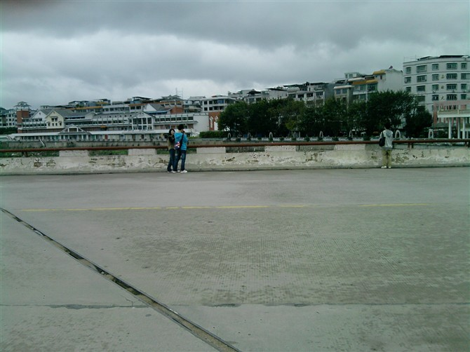
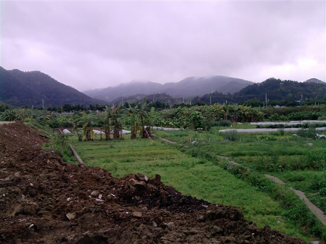
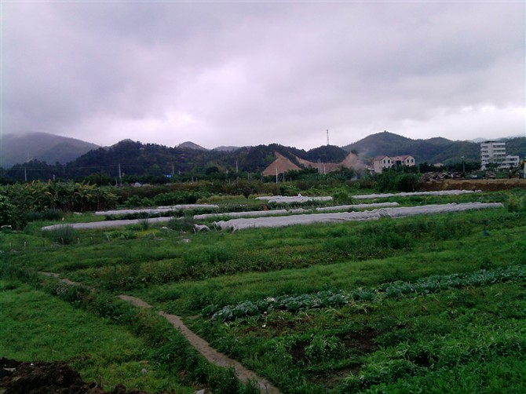
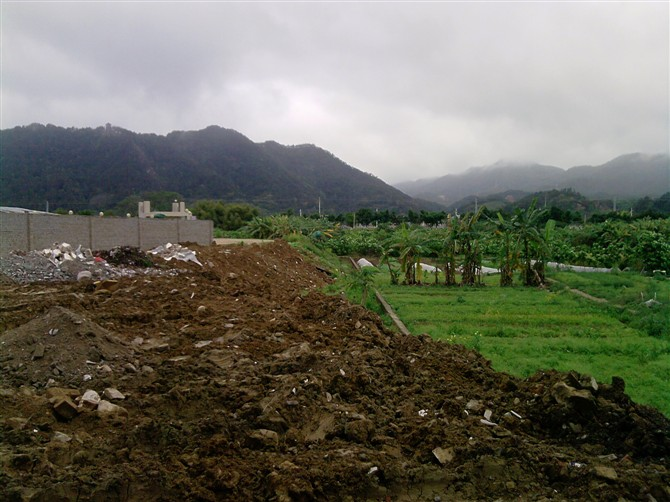
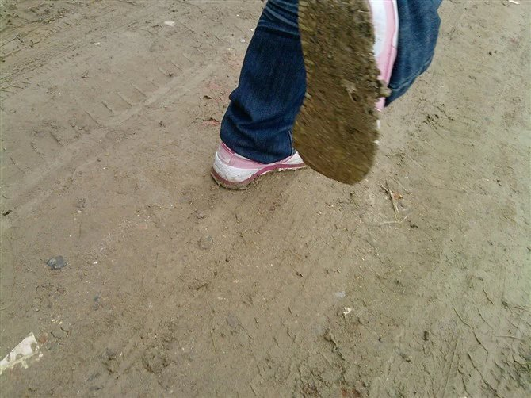
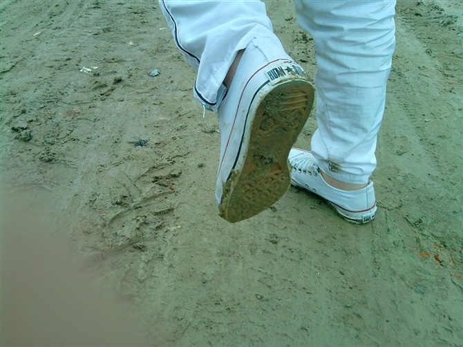
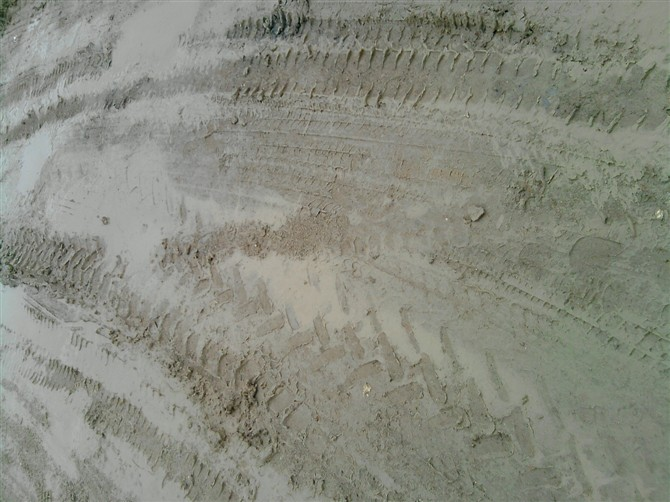

啊！我的亲爱的!
啊！特恨手机不能聚焦，要不然就可以看清楚了。
昨天，..
吾.. 好，从昨天的昨天开始说起好了。
那可恶的星期六，我都忘了我是怎样从床上折腾起来的，总之每天早上6点多掀开被子的那一刻，我都想去死。星期六，我得去学校，上学。自从到了高一下半学期，分到一个新的班级，我便觉得作业啊，迟到啊，这样的一些东西都无所谓了。那个班主任刘海象说，作文准时交啊，否则中午放学就留下来做，做不完不用回家吃饭了。我笑~那楣刚好，不做楣不做，你吹啊。有本事你中午留下了监视我啊。
晚上，同以前的同学一起去喝酒，我对那几个无语，喝也没喝都少啊，至于嘛，连条直线都走不了。于是我深思，可能家里基因好吧，比较不会醉。回到家，卧室，关门，我先是大哭，然后发些个短信无理取闹，觉得全世界都没人在乎我，于是我傲糟的撕扯棉被，最后还是睡着了。
第二天早上醒来，6点多，看来生物钟一时改不过来，多晚睡都好，都这个点醒来。想到8点多才跟他们去敬老院，于是看了政治书，催眠，强迫自己睡下去，结果差点没醒来，回笼觉睡得太爽了，为了清醒清醒，我总是会打个电话，跟人絮叨絮叨几句。终于，到了约定时间，再加一番的折腾，我们集合，吃了早饭。
我们，噢，不对，对这事我没费什么心，就安娜小姐一人买了一些老人家吃的东西，我们一行4人去了那一死偏僻死偏僻的地方。
一件很遗憾的事，就是安娜小姐上次去敬老院看的那位老人，原本答应了她下次会再来的，结果。害安娜哭红了鼻子。九十多岁了呢，她在天堂会好的，而且不用再受病痛的折磨了。我说。我不太懂得交际，只得搭着院长的话，尽量自然些，聊了一些有的没的，然后便离开了敬老院。

重点不是人，也不是那建筑，重点是那翻滚的乌云，你们看见没。
天气就是从那天开始便冷的，我同桌说，春天来了，冬天又来了。昨天那一整天，空气中都飘着那大大小小的雨丝，不过一直没人打伞，好吧，当是露水。我们来到一个桥上，现在看着这张图片，安娜小姐纠缠着锐锐，咸蛋远远地张在一边，我远远地站在桥的对面，要是上帝真正从天上俯视着我们，那我们所站的这个队形还真让人无语。
之后，锐锐、咸蛋，我、安娜，分开走。
他们去哪了太长便不说了，重点是我跟安娜的那飘荡的旅程。我们从城区走到看不知道哪条国道，靠着一条河。觉得走了还蛮久的，看见一个椅子便休息休息，和她聊了很多很多，吖，送你一首歌，美丽笨女人。
之后我们为了抄近路，回家，便穿越了一片丛林，田园?呃…不知道是什么鬼地方，总之我们手拉着手走过去了。一路，那雨水沾到叶片上，然后又洒在我们的头发上，衣服上；还有鞋，那一路的泥泞，鞋底厚厚的一层泥。当我们从公路的那边穿回居民区的时候，哈！豁达！






用以上的照片还是不够表达我们的感觉!只怪我没拍下一路的全部。
可是我觉得很开心哈！既然旁人无法感受，那这快乐就让我和安娜两人世界里回忆吧！
（诺，安娜小姐，送你的，这一篇。哈，写的好烂，全白话。
分班又怎样？我还是该爱的爱，该恨得恨！
拿得起！何愁放不下！？我依旧活的精彩！！！
相信我，未来，我们依旧能够一直 一起 手牵手 走下去！